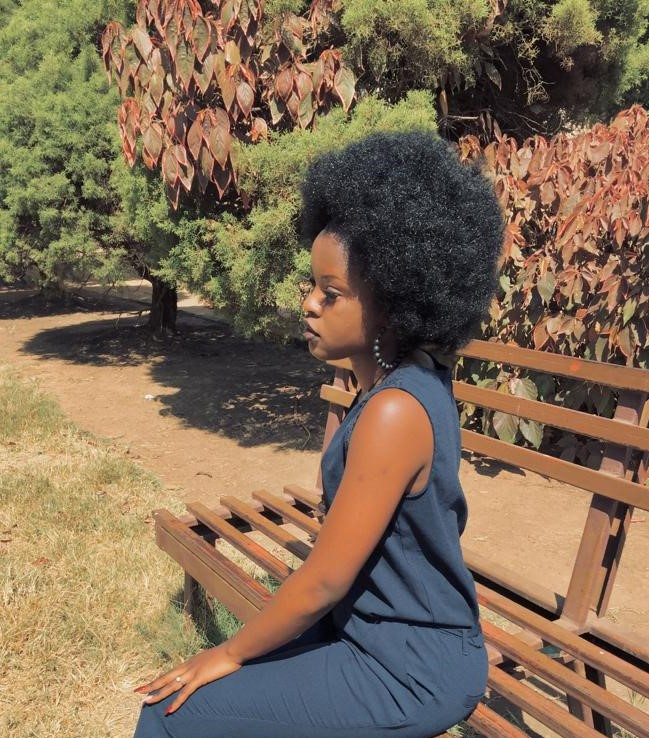

Presentation
Je me nomme Winner mais tout le monde m'appelle Zahora, je suis étudiante à l'école supérieure d'informatique Salama Précisément dans la promotion LI
Je suis dans une famille de 8 enfants dont je suis la 6ème fille pour plus de précision je suis la cadette 101, fille de BERNARD KABWE et de SANDRA MWELWA, j'ai une meilleure famille où l'amour, l'unité, le respect, la dialogue, la paix et la joie règnent et j'aime énormément ma famille et j'en suis très heureuse et fière, c'est une famille que je n'ai pas choisi mais je ne cesserais jamais de remercier le père de m'avoir donné une famille aussi adorable.
Mon parcours
J'ai passé toute ma vie à l'internat je dirais que j'ai grandi à l'internat précisément
dans la ville de Likasi
Certes la vie de l'internat n'est pas facile à vivre mais on tient quand-même
le coup, ainsi après ça j'ai eu une nouvelle habitation il y a de cela une année Je
reste au quartier KAMALONDO précisément à l'internat IEM/KAMAL sur l'avenue des écoles.
ma vie spirituelle
Je suis chrétienne pentecôtiste et cela depuis quelques années, au fait je fus chrétienne catholique et baptisée depuis la naissance et c'est après que j'ai eu à changer de religion.
Je fréquente l'église FOI DE DIEU ou je suis très dévouée au service de DIEU.
"PSAUMES 23 :quand je marche dans la vallée de l'ombre de la mort je ne crains aucun mal car tu es avec moi"
Mon parcours Scolaire et Académique
comme je le disais j'ai grandi à l'internat, pour mes études primaires j'ai fait dans une école catholique à
Likasi. En ce qui concerne mes études humanitaire je les ai passées dans la même ville au LYCÉE LUBUSHA, a
u début je me disais que c'est vraiment une souffrance mais c'est après que j'avais compris que c'était u
niquement pour mon bien afin de me faire grandir et d'avoir une vie indépendante dans d'autres choses.
Et me voici actuellement universitaire dans une école supérieure nommée ESIS, une école qui vise un métier
professionnel mon niveau intellectuel est le fruit de l'éducation reçue dans mon parcours Scolaire et Académ
ique et à vrai dire je suis très fière de moi et en aucun moment de mon parcours n'a été peine perdue.
Mes objectifs
Devenir une grande informaticienne en robotique tout en développant l'intelligence artificielle qui m'aidera à créer mes robots mes robots seront non seulement de manière intellectuelle mais aussi de manière agricole etc...
Parvenir à subvenir aux besoins des enfants de la rue, construire de vaste bâtiments pour le logement, nourriture et autres un peu du genre une orphelinat leurs donnés un foyer et une éducation etC...
Contribuer au développement du pays tout en étant utile dans la société
Enfin me marier, mais c'est uniquement après avoir réalisé tous mes projets.